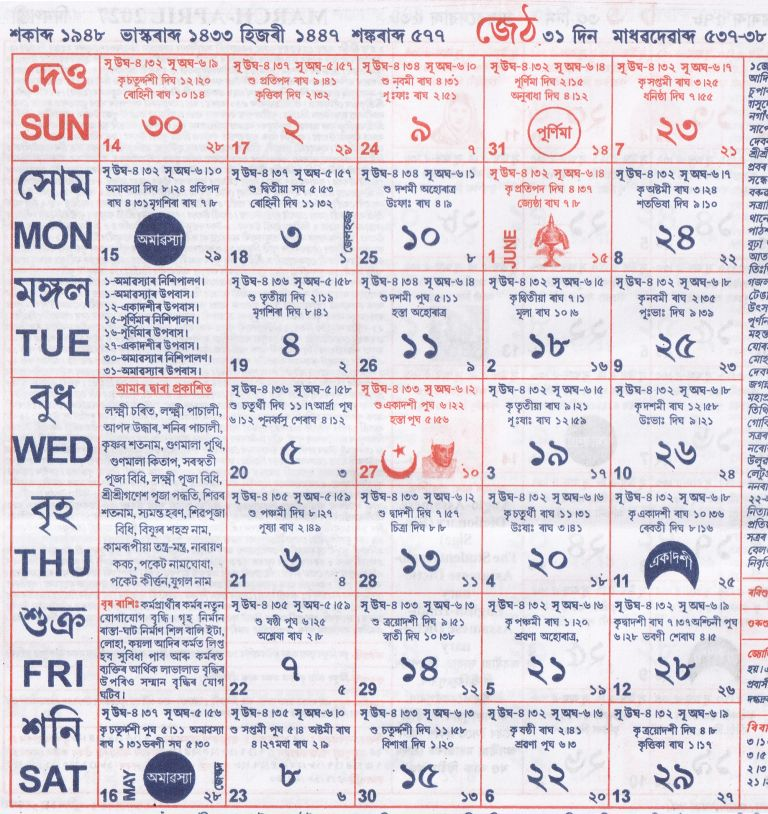

<table style="margin-left:auto; margin-right:auto; max-width:700px; border-collapse:collapse;" border="1" cellpadding="10">
  <tbody>

    <!-- Title -->
    <tr>
      <td>
        <h1 style="text-align:center;">জেঠ</h1>
      </td>
    </tr>

    <!-- Image -->
    <tr>
      <td style="text-align:center;">
        
      </td>
    </tr>

    <!-- Main Content -->
    <tr>
      <td style="text-align:justify; line-height:1.6;">

        <p><strong>১ জেঠ:</strong> সাবিত্ৰী ব্ৰত, মলমাহ আৰম্ভ, হৰিদেৱৰ তিথি উৎসৱ, পালনাম আৰু হোমযজ্ঞ আৰম্ভ।</p>

        <p><strong>২–৪ জেঠ:</strong> বিভিন্ন সত্ৰ আৰু ধর্মীয় ব্যক্তিৰ তিথি পালন।</p>

        <p><strong>৫ জেঠ:</strong> বিষ্ণু মেলা আৰু বিভিন্ন তিথি অনুষ্ঠান।</p>

        <p><strong>৮ জেঠ:</strong> শ্ৰীশ্ৰীকৃষ্ণগুৰু প্ৰভুৰ আবিৰ্ভাৱ মহোৎসৱ।</p>

        <p><strong>৯–১২ জেঠ:</strong> বিভিন্ন সত্ৰত নামকীৰ্ত্তন, জন্মোৎসৱ আৰু স্মৃতি অনুষ্ঠান।</p>

        <p><strong>১২ জেঠ:</strong> পণ্ডিত জৱাহৰলাল নেহৰুৰ স্মৃতি দিৱস।</p>

        <p><strong>১৩–১৬ জেঠ:</strong> বিভিন্ন সত্ৰত তিথি পালন, নামকীৰ্ত্তন আৰু উৎসৱ।</p>

        <p><strong>১৬ জেঠ:</strong> ৰাভা জনগোষ্ঠীৰ বায়খো পূজা আৰম্ভ।</p>

        <p><strong>১৭ জেঠ:</strong> মহাপুৰুষ শ্ৰীশ্ৰী মাধৱদেৱৰ আবিৰ্ভাৱ তিথি।</p>

        <p><strong>১৮–২২ জেঠ:</strong> বিভিন্ন ধৰ্মীয় অনুষ্ঠান আৰু স্মৃতি দিৱস।</p>

        <p><strong>২১ জেঠ:</strong> পৰিবেশ সপ্তাহ আৰম্ভ।</p>

        <p><strong>২৪–৩০ জেঠ:</strong> বিভিন্ন তিথি, পূজা, নামঘোষা পাঠ আৰু উৎসৱ।</p>

        <p><strong>৩১ জেঠ:</strong> মলমাহ সমাপ্তি, শিৱ মন্দিৰত জাগাৰ পূজা।</p>

      </td>
    </tr>

    <!-- Astrological Info -->
    <tr>
      <td>
        <p><strong>ৰবিশুদ্ধি:</strong> কৰ্কট, সিংহ, ধনু আৰু মীন ৰাশিৰ ১৩ তাৰিখৰ পৰা মেষ, কৰ্কট, সিংহ, কন্যা, মকৰ আৰু মীন ৰাশিৰ।</p>

        <p><strong>গুৰুশুদ্ধি:</strong> ১৭ জেঠৰ পৰা মিথুন, কন্যা, বৃশ্চিক, মকৰ আৰু মীন ৰাশিৰ।</p>
      </td>
    </tr>

    <!-- Astrology Notes -->
    <tr>
      <td style="text-align:justify;">
        <p><strong>জ্যোতিষতত্ত্ব:</strong> এই মাহত বিবাহ হলে কন্যা পতিব্ৰতা আৰু ঐশ্বৰ্যযুক্তা হয়। এই মাহত জন্ম লোৱা ব্যক্তি তীক্ষ্ণ বুদ্ধিসম্পন্ন, ভাগ্যশালী, পণ্ডিত আৰু বাকপটু হয়।</p>
      </td>
    </tr>

    <!-- Muhurat -->
    <tr>
      <td>
        <p><strong>শুভ দিনসমূহ:</strong></p>
        <ul>
          <li>বিবাহ,পঞ্চামৃত: ৬, ১৩, ১৬</li>
          <li>সাধভক্ষণ: ৫, ৬, ১৩</li>
          <li>নামকৰণ: ৩, ১০, ২১, ২৪, ২৭</li>
          <li>অন্নপ্ৰাশন: ৩, ৫, ৬, ১০, ১৩</li>
          <li>গৃহপ্ৰৱেশ: ২১–২৭</li>
          <li>হালখতি: ১, ১২, ১৬, ২৭, ৩১</li>
        </ul>
      </td>
    </tr>

  </tbody>
</table>
